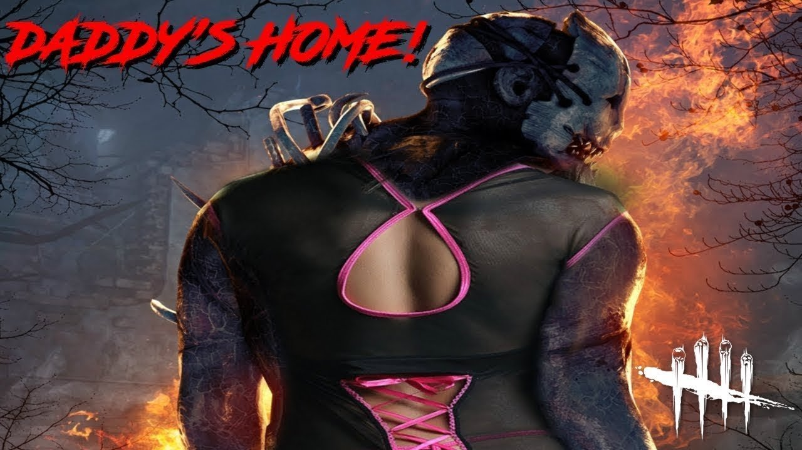

Dead by Daylight to asymetryczna, pierwszo- i trzecioosobowa gra typu survival horror dla wielu graczy, opracowana przez kanadyjskie studio Behaviour Interactive i wydana po raz pierwszy dla systemu Windows w 2016 roku.
W kolejnych latach gra została przeportowana na PlayStation 4, Xbox One; jesienią 2019 roku gra została wydana na konsolę Nintendo Switch[2]; wiosną 2020 roku gra została wydana na Androida i iOS.
Zainspirowana motywami i obrazami z gatunku slasherów, gra oferuje drużynę od jednego do czterech „ocalałych” graczy walczących z piątym „zabójcą” na ograniczonej mapie; ocaleni są nieuzbrojeni i nie mogą walczyć z zabójcą - muszą się ukrywać, uciekać i pomagać sobie nawzajem. Ocaleni wygrywają mecz,
jeśli uda im się otworzyć wyjścia z mapy i opuścić ją bezpiecznie, zabójca - jeśli uda mu się złapać wszystkich ocalałych i powiesić ich na hakach, poświęcając złowrogą "Istotę". Dead by Daylight zapewnia graczom szereg tematycznych map i zabójców do wyboru, z których każdy ma swoje unikalne zdolności.

Try now
Don't try
Mam 4000 godzin w tej grze, znałem ją jak bóg i śmiało mogę powiedzieć, że nie warto w nią grać